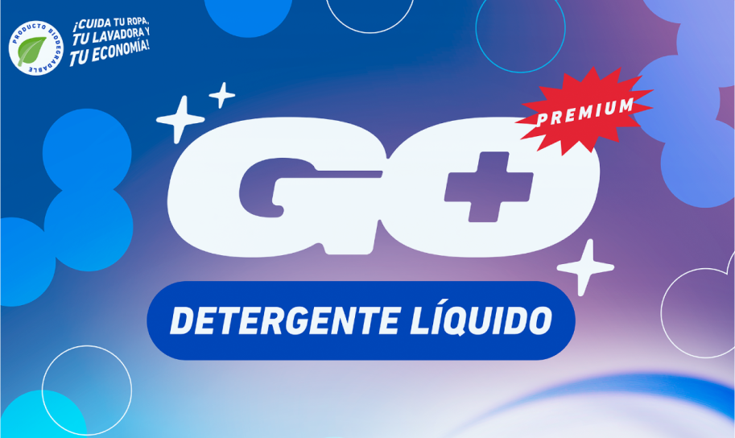
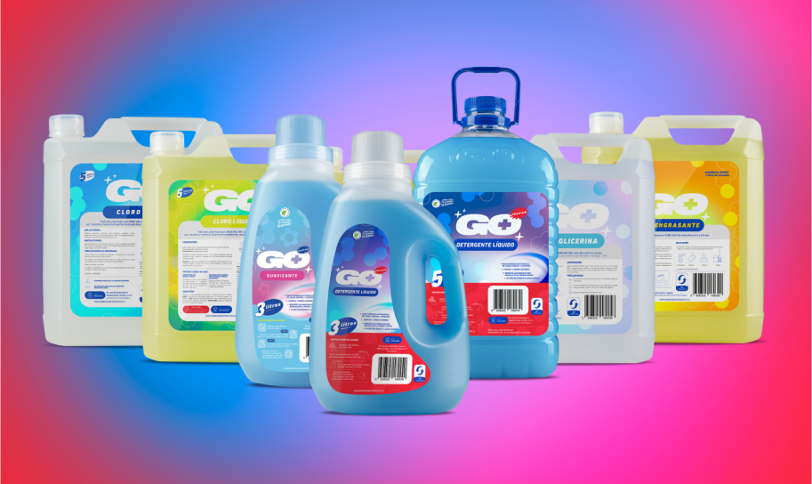
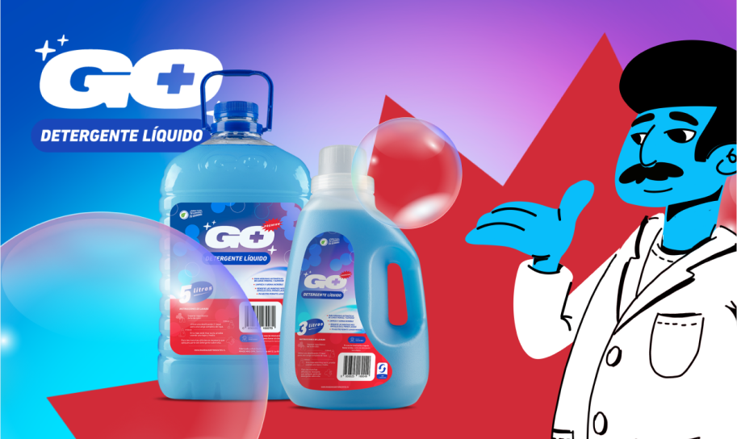
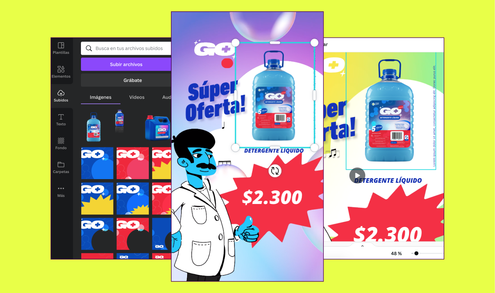

<div class="modal fade modal-xl" id="exampleModal3" tabindex="-1" aria-labelledby="exampleModalLabel" aria-hidden="true">
  <div class="modal-dialog">
    <div class="modal-content">
      <div class="modal-header">
        <button type="button" class="btn-close" data-bs-dismiss="modal" aria-label="Close"></button>
      </div>
      <div class="modal-body">

<div class=" row justify-content-center align-items-center" style="margin-bottom: 40px; margin-top: 40px;">
  <h2 class="text-center col-12 m-0 px-3 py-2" style="font-family:PPMonument; font-size: 48px; ">Go+</h2>
  <p class="text-center text-dark fs-6 fw-light font-family-Helvetica Neue col-12 m-0 px-3 py-2">Branding, Packaging, and Social Media</p>
<br> <p style="padding-left: 10%; padding-right: 10%;">

  Go+ products are a range of affordable cleaning products that are available in supermarkets and retailers throughout Santiago, Chile. Go+ successfully aims to provide products that are premium but still affordable. Parent company Rinde Mas approached Pink Dog to help create the look of their new Go+ brand and ensure their new detergent and cleaning products stood out in a space with a lot of competition.

  We began by updating the logo and colour palette. We opted for a bold and simple logo, with a ‘pill’ below encapsulating the product name on each product. We chose primary colours for their versatility and visual impact, with the blue colour chosen to work in tandem with the existing blue colour of their best-selling laundry detergent.

  With the branding nailed down, we moved on to the labels and packaging. We used the primary colours set out in the brand guideline to categorise each product's label with its own key colour, which compliments the bright colours of the cleaning liquids inside each bottle. The colour of the cleaning products themselves is highlighted with clear and opaque product packaging with embossed Go+ logo.

  With the brand and packaging locked down, we moved onto the social media creating social media templates and strategy to market their products on their social media channels. We also introduced the “Don Rinde” company mascot, who is featured throughout the social media campaign and through custom social media stickers.

</p>








      </div>
      <div class="modal-footer">

      </div>
    </div>
  </div>
</div>


